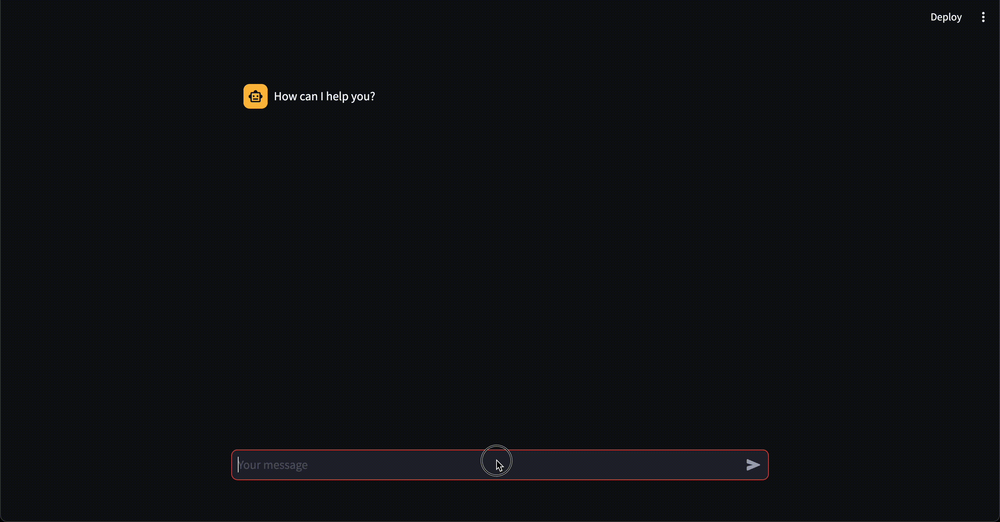

streamlit
basic chat app with memory

# https://python.langchain.com/docs/integrations/memory/streamlit_chat_message_history
from langchain_community.chat_message_histories import (
StreamlitChatMessageHistory,
)
from langchain_core.prompts import ChatPromptTemplate, MessagesPlaceholder
from langchain_core.runnables.history import RunnableWithMessageHistory
from langchain_openai import ChatOpenAI
import streamlit as st
msgs = StreamlitChatMessageHistory(key="langchain_messages")
if len(msgs.messages) == 0:
msgs.add_ai_message("How can I help you?")
prompt = ChatPromptTemplate.from_messages(
[
("system", "You are an AI chatbot having a conversation with a human."),
MessagesPlaceholder(variable_name="history"),
("human", "{question}"),
]
)
chain = prompt | ChatOpenAI()
chain_with_history = RunnableWithMessageHistory(
chain,
lambda session_id: msgs, # Always return the instance created earlier
input_messages_key="question",
history_messages_key="history",
)
for msg in msgs.messages:
st.chat_message(msg.type).write(msg.content)
if prompt := st.chat_input():
st.chat_message("human").write(prompt)
# As usual, new messages are added to StreamlitChatMessageHistory when the Chain is called.
config = {"configurable": {"session_id": "any"}}
response = chain_with_history.invoke({"question": prompt}, config)
st.chat_message("ai").write(response.content)
Note
langchain_community had a bug that was fixed in this PR.
I confirmed it works with the latest version of langchain_community (0.0.28).
- https://python.langchain.com/docs/integrations/memory/streamlit_chat_message_history
- https://github.com/streamlit/streamlit/issues/7290